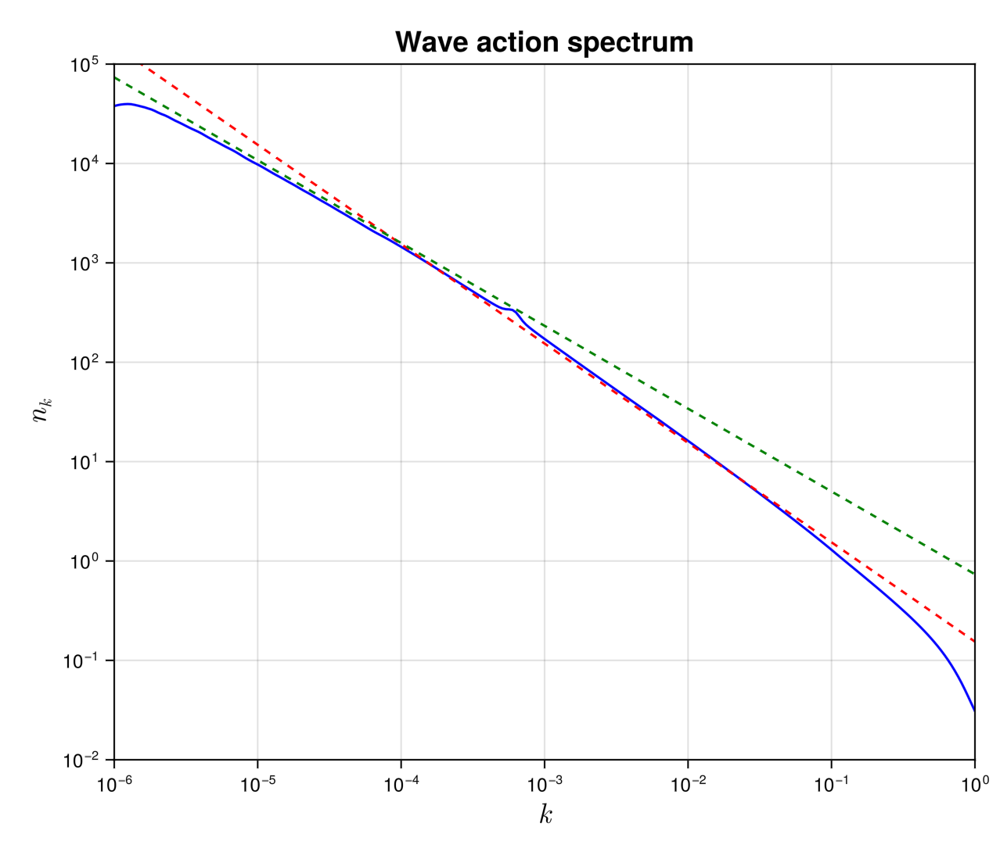

MMT solver
The Majda-McLaughlin-Tabak (MMT) Majda et al., J. Nonliear Science. Vol. 7, 9–44, (1997) model was introduced by the authors as a simple and numerically affordable model to test the theory of wave turbulence. It consists on one-dimensional partial differential equation where the dispersion relation and the homogeneity degree of the non-linearity are tunable parameters. This model has triggered enormous research and opened the way to the study of solitonic turbulence. It is still the matter of recent academic research. For a complete review see Zakharov et al., Physics Report. Vol. 398, Issue 1, (2004).
Description
In the solver, we consider the WKE of the $1D$-MMT model $\dot{n_k}=St_k$ that explicitly reads
\[ \dot{n_k}=4\pi \int\left| T^{k1}_{23}\right|^2\delta(k+k_1-k_2-k_3)\delta(\omega^{k1}_{23})n_kn_1n_2n_3\left(\frac{1}{n_k}+\frac{1}{n_1}-\frac{1}{n_2}-\frac{1}{n_3} \right)dk_1dk_2dk_3, \]
where $\omega^{k1}_{23}=\omega_k+\omega_1-\omega_2-\omega_3$. More explicitly, for the MMT model we have
\[ \omega_k=|k|^\alpha, \quad T^{k1}_{23}=|k k_1 k_2 k_3|^{\beta/4}.\]
The solver only consider the case α=1/2 for which we can provide an analytical paremetrisation of the resonant manifold (given below)
\[k+k_1-k_2-k_3 = 0,\quad \omega_k+\omega_1-\omega_2-\omega_3 = 0\]
This wave kinetic equation conserves the total energy $H$ and waveaction $N$
\[N= \int_{-\infty}^\infty n_kdk, \quad {\rm and }\quad H = \int_{-\infty}^\infty \omega_k n_kdk.\]
Solver
The reduced truncated MMT wave kinetic equation
WavKinS solves the MMT wave kinetic equation making use of the two δ-Dirac. More precisely, it solves the following kinetic equation
\[\dot{n_k}=4\pi \int_{-\infty}^\infty\frac{\left| \tilde{T}^{k1}_{23}\right|^2}{\Delta_{12}}n_kn_1n_2n_3\left(\frac{1}{n_k}+\frac{1}{n_1}-\frac{1}{n_2}-\frac{1}{n_3} \right)dk_3,\]
where $\Delta_{12}=\frac{1}{2}\left| \frac{sign{(k_2)}}{\sqrt{k_2}}- \frac{sign{(k_1)}}{\sqrt{k_1}} \right|$, $k_2=k+k_1(k_3)-k_3$ and $k_1(k_3)=k\, q_1(\frac{k_3}{k})$, with
\[q_1(q_3) = \left\{ \begin{array}{ll} -\frac{\left(q_3+\sqrt{-q_3}-1\right)^2}{\left(\sqrt{-q_3}-1\right)^2} & \quad q_3 \leq -1 \\ \frac{q_3 \left(q_3-2 \sqrt{-q_3}-1\right)}{(q_3+1)^2} & \quad -1 \leq q_3 \leq 0\\ \frac{1}{2} \left(\sqrt{8 q_3^{3/2}-3 q_3^2-6 q_3+1}+q_3-1\right) & \quad 0 \leq q_3 \leq 1\\ \frac{1}{2} \left(\sqrt{q_3^2-6 q_3+8 \sqrt{q_3}-3}+q_3-1\right) & \quad 1 \leq q_3\\ \end{array} \right.\]
The modified collisional matrix is simply $\tilde{T}^{k1}_{23}=\theta_k\theta_1\theta_2\theta_3 \tilde{T}^{k1}_{23}$, where $\theta_k = 1$ if $|k|\le k_{\rm max}$, and $0$ otherwise, with $k_{\rm max}$ the maximum wavenumber. This truncated WKE, exactly conserves the truncated invariants
\[N= \int_{|k|<k_{\rm max}} n_kdk, \quad {\rm and }\quad H = \int_{|k|<k_{\rm max}} \omega_k n_kdk.\]
We use logarithmic grid wave_spectrum to represent the waveaction spectrum $n_k$. The integral in the collisional is computed first for $k_3<0$, assuming $n_k=n_{-k}$, and then for $k>0$. There are no singular terms to take care of.
Note the if we use $M$ nodes to simulate the MMT model, then the numerical cost is of the order of $M^2$ operations.
Using the MMT solver
As all the other WavKinS solvers, for MMT we need to create a MMT structure containing all the fields, working space, diagnostics, etc.
using WavKinS
# Create a waveaction structure containing the basic grid
M = 256 # set the number of nodes
kmin = 1e-6 # minimal wave number
kmax = 1e0 # maximal wave number
Nk = wave_spectrum(kmin,kmax,M)
# Creating a MMT run structure with default parameters and β = 0.
Run = MMT(Nk; β=0.0);The MMT solver has implemented an option to compute the collisional term as a sink and a source term
\[St_{\bf k} = -\gamma_{\bf k} n_{\bf k} + \eta_{\bf k}\]
The computation of $γ$ and $η$ are performed with the options compute_γk and compute_ηk and accesible as:
# computing collisional integral
St_k!(Run;compute_Sk=true, compute_γk=true, compute_ηk=true)
γ_k = Run.γk
η_k = Run.ηk If both, compute_γk=false and compute_ηk=false, then $St_k$ is computed directly.
The MMT solver is compatible with the time stepping AB_Euler_step and AB2_RK2_step, but still under testing.
Diagnostics
In addition to the standard diagnostics, the solver computes the waveaction flux spectrum.
\[Q_k = -2\int_0^k St_q dq\]
Spectral and global quantities can be directly computed using the provided routines (see this tutorial). It is stored in
Run.diags.sp_outs["Qk"] # for I/0 purposes
Run.diags.sp_store["Qk"] # stored over timeTesting convergence of the collisional integral
WavKinS provide a simple test of the numerical convergence of the computation of the collisional integral. The testing script is located in /run/tests/physical_systems/tests_MMT.jl.
Theoretically, the collisional integral should conserve the waveaction and the energy, which means that
\[\int_{-\infty}^\infty St_k dk=0, \quad \int_{-\infty}^\infty \omega_k St_k dk=0.\]
The following numerical test evaluates those integrals and check the convergence to $0$.
using WavKinS
function nk_test(kx)
return exp(-abs(kx)) * kx^2
end
for M ∈ 2 .^ (4:10)
kmin = 1e-3
kmax = 1e+2
Nk = wave_spectrum(kmin,kmax,M)
Run = WavKinS.MMT(Nk; interp_scheeme=WavKinS.lin_interp);
kk = Nk.kk
@. Nk.nk = nk_test.(kk)
WavKinS.St_k!(Run;compute_Sk=true, compute_γk=true, compute_ηk=true)
Flux = wave_spectrum(kmin,kmax,M)
@. Flux.nk = Run.Sk.nk
NFlux= integrate_with_log_bins(Flux)
@. Flux.nk = Run.ω(kk) * Run.Sk.nk
EFlux= integrate_with_log_bins(Flux)
AA = total_waveaction(Run)
Ene = energy(Run)
println("M = ", M, ", Integral flux num: dN/N=", NFlux/AA, " dH/H=", EFlux/Ene)
endThe output of this test is
M = 16, Integral flux num: dN/N=-3.067434124891184e-11 dH/H=1.5573442892100724
M = 32, Integral flux num: dN/N=-2.395977091429804e-11 dH/H=0.1108223756248543
M = 64, Integral flux num: dN/N=-2.069127127113921e-11 dH/H=0.03449846831998508
M = 128, Integral flux num: dN/N=3.257316662210291e-10 dH/H=0.007241206687316066
M = 256, Integral flux num: dN/N=6.161729620725928e-8 dH/H=0.0019066862575089908
M = 512, Integral flux num: dN/N=1.2749063308649134e-9 dH/H=0.000501465301534334
M = 1024, Integral flux num: dN/N=-2.3447541840433413e-10 dH/H=0.0001278778185124224The solver conserves well the waveaction and errors on energy conservation roughly decreases as $M^{-2}$.
Theoretical predictions
As usual in wave turbulence theory, there is a number of theoretical predictions for the MMT model. In the case of out-of-equilibrium solutions, with forcing and dissipation, the theoretical predictions are
\[n_k=C_{KZ}^Q |Q_0|^{1/3}k^{-x_Q},\quad n_k=C_{KZ}^P P_0^{1/3}k^{-x_P}\]
where $Q_0$ and $P_0$ are the waveaction and energy fluxes, and the superscript $Q$ and $P$ denotes the inverse waveaction and direct energy cascades, respectively. The theory predicts Zakharov et al., Physics Report. Vol. 398, Issue 1, (2004)
\[x_Q =1+( 2\beta-\alpha)/3 ,\quad x_P=1+2\beta/3\]
The constants $C_{KZ}^Q=(3/(8\pi |I'(x_Q)|))^{1/3}$ and $C_{KZ}^P=(3/(8\pi I'(x_P)))^{1/3}$, with $I(x)$ the dimensionless collisional integral, can be also computed numerically. WavKinS also provides routines to compute the derivatives of $I(x)$ with $\alpha=1/2$. They can be accessed as
β = Run.β;
α = 1.0 / 2.0;
xQ = 2 * β / 3 + 1 - α / 3;
xP = 2 * β / 3 + 1;
WavKinS.dxI_MMT(xP)
WavKinS.dxI_MMT(xQ)which produces the output
-2.354496680354443
6.061632815153047Note that $I'(x_Q)<0$ and $I'(x_P)>0$, consistently with the expected inverse and direct cascade for waveaction and energy, respectively.
Running the MMT solver
WavKinS provides a ready to use script to obtain out-of-equilibrium steady states of the WKE. The script is similar to the one presented in the tutorial and can be found in /run/simple/RunSimpleEvolution_MMT.jl. Running the script will generate the following plot
 The dashed lines are the theoretical predictions for the inverse waveaction (green) and direct energy (blue) cascades, with no adjustable parameters.
The previous plot took less than 30 seconds on a 3 GHz 10-Core Intel Xeon W iMac Pro, using 4 cores.
List of structures and methods for MMT solver
WavKinS.dxI_MMT — MethoddxI_MMT(x; β=0.0, kmax=10000, npoints=100000)Compute the derivative of the dimensionless colissional integral for the MMT model
x: value of the exponent (argument of the funcion)β: homogeneity degree of the interaction matrix. (defaultβ=0)kmax: Ultraviolet cut off. (defaultkmax=10000)npoints: number of discretisation points. (defaultnpoints=100000)
WavKinS.MMT — TypeMMTSimulation structure for MMT wave turbulence. It contains
name::String #name of the simulation type
Nk_arguments::Int # Number of arguments of ``n_k``. 1: (fully symetric) , 2: (cylindrical average in 3D or mirror symmetric in 2D), 3: Only mirror symmetric in 3D
ω # Dispersion relation. This is a function of ``k``. It takes `Nk_argument` arguments
Nk::wave_spectrum #wave action
Sk::wave_spectrum #collisional integral
γk::Vector{Float64} # gamma term of WKE
ηk::Vector{Float64} # eta term of WKE
F1::wave_spectrum #working field
FSt::Vector{wave_spectrum} #Array of working fields for multithreading
FSt1::Vector{wave_spectrum} #Array of working fields for multithreading
FSt2::Vector{wave_spectrum} #Array of working fields for multithreading
partition::Vector{UnitRange{Int64}} #partition for multithreading
# Type of interpolation and time stepping scheemes
interp_scheeme::Interp_Scheeme
time_stepping::Time_Stepping
# Outputs and diagnostics
diags::diagnostic_container
t::Float64 #current time
β::Float64 # dispersive length
dimension::Int # physical dimension of the system
dΩ::Float64 # surface of the unit sphere
FD::force_dissipation # Contains all the terms about force and dissipationWavKinS.MMT — MethodMMT(Nk::wave_spectrum; β=0.,interp_scheeme=lin_interp,drive_scheeme=RK2_stepConstructor of a MMT structure. Optionally we set interpolation and time-stepping scheemes:
interp_scheeme : lin_interp (default), powexp_interp, powGauss_interp,BS_interp
drive_scheeme : Euler_step, RK2_step (default), ETD2_step, AB_Euler_step, and AB2_RK2_step.The parameter β=0. is the exponent of non-linear term
WavKinS.compute_spectral! — Methodcompute_spectral(Run)Compute and store MMT current spectral quantities
Run: MMT WavKinS simulation structure containing the wave action $n_{\bf k}$
This routine computes and store in Run.diags.sp_outs the waveaction, energy spectra and their corresponding fluxes.
WavKinS.store_spectral! — Methodstore_spectral(Run::MMT)Compute and store MMT spectral quantities
Run: MMT WavKinS simulation structure containing the wave action $n_{\bf k}$
This routine computes and store in Run.diags.sp_store the waveaction, and the energy and waveaction flux spectra.